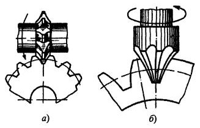
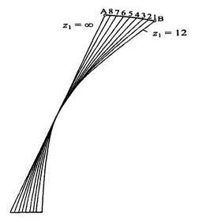
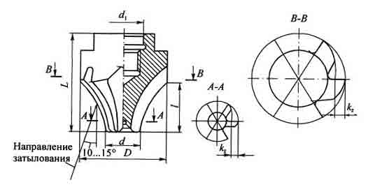

К числу этих инструментов относятся: дисковые и пальцевые модульные фрезы, зубодолбежные головки и протяжки. Первые два вида инструментов широко применяются в мелкосерийном и ремонтном производстве. Дисковые модульные фрезы выпускаются серийно инструментальными заводами. Два последних вида инструментов являются специальными и предназначены для изготовления колес определенного модуля и числа зубьев. Они используются на специальных станках в массовом производстве, очень сложны в изготовлении и имеют ограниченное применение.
Дисковые зуборезные фрезы представляют собой дисковые фрезы с фасонными режущими кромками. Применяются для нарезания прямозубых и реже косозубых колес (m = 0,3...26 мм) на универсально-фрезерных станках с делительным устройством.
В процессе зубонарезания фреза вращается вокруг своей оси, а движение подачи задается заготовке, установленной в делительном устройстве станка, параллельно ее оси. В начале захода фреза врезается на полную глубину впадины и далее перемещается вдоль нее. Процесс последовательной обработки впадин между зубьями нарезаемого колеса производится путем деления на один окружной шаг. Основным достоинством такого инструмента является простота переточки. Как и все инструменты с затылованными зубьями, дисковые модульные фрезы перетачиваются по передней грани. Процесс зубонарезания ими прост в наладке и кинематике и не требует применения специальных зуборезных станков. Однако такой способ нарезания зубьев является малопроизводительным и обеспечивает низкую точность из-за погрешностей деления и установки фрезы относительно заготовки. Зубья фрезы, как правило, затылованные, имеют далеко не оптимальную геометрию режущих кромок, что приводит к снижению режимов резания и стойкости инструмента.
Число зубьев у фрез с затылованным зубом из-за необходимости иметь большой припуск на переточку мало, что также отрицательно сказывается на производительности и качестве обработанной поверхности. Поэтому данным инструментом нарезаются колеса самой низкой (9-й и 10-й) степени точности.
При нарезании прямозубых колес методом копирования профиль режущих кромок является копией профиля впадины между зубьями колеса, который делится на рабочую часть, выполняемую по эвольвенте, и нерабочую часть у дна впадины, находящуюся ниже основной окружности радиусом rb1
С целью снижения числа типоразмеров фрез их целесообразно изготавливать комплектами из ограниченного количества фрез, каждая из которых предназначается для изготовления колес с числом зубьев в определенном диапазоне.
Стандартные дисковые фрезы изготавливают комплектами из 8 штук (номеров) для модулей m < 8 мм и из 15, а иногда из 26 номеров для колес m > 8 мм.
В основу комплектования фрез положено равенство отрезков по дуге окружности выступов колес. Для этого вычерчивают в увеличенном масштабе профиль рейки и профили зубьев колес от z = 12 и более. Разницу профилей по наружному диаметру делят на 8 примерно равных отрезков и определяют, какому числу зубьев соответствуют номера профилей от 1 до 8. Каждая фреза из комплекта, таким образом, предназначена для нарезания определенного диапазона чисел зубьев.
С увеличением модуля увеличивается высота зубьев, а разница в кривизне профилей становится большей. Поэтому предусматриваются более узкие диапазоны чисел нарезаемых зубьев и большее число фрез в комплекте. Промежуточные номера при этом обозначаются дробными числами, например 31/2 (для комплекта из 15 фрез) или 51/4 (для комплекта из 26 фрез). Следует иметь в виду, что фреза каждого номера профилируется по наименьшему числу зубьев диапазона. В этом случае уменьшается опасность защемления зубьев сопряженных колес, так как радиус кривизны профиля будет тем меньше, а, соответственно, ширина прорезаемой впадины тем больше, чем меньше число зубьев нарезаемого колеса.
Особенности конструкции и геометрические параметры дисковых зуборезных фрез. Основные размеры фрез выбираются так же, как и для обычных дисковых фасонных фрез.
Величина задних углов αNi переменная. Она уменьшается в точках боковых режущих кромок около вершины до 1°30' даже при α в = 12...15°.
Передний угол у стандартных фрез равен нулю, что ухудшает условия резания, но упрощает изготовление, переточку и контроль профиля зубьев фрез.
При нарезании колес крупных модулей удаление больших объемов металла из впадин занимает много времени. С целью повышения производительности для предварительного (чернового) фрезерования используют фрезы со вставными ножами, часто оснащенными напайными твердосплавными пластинами. В этом случае профиль зубьев можно брать упрощенный - прямобочный или трапециевидный.
Зубья лучше выполнять не затылованными, а остроконечными с заточкой по передней и задней граням. Это дает возможность увеличить значения задних углов до оптимальных величин, увеличить число зубьев, а следовательно, повысить стойкость и производительность фрез. Передние углы берут положительными (до γ = 10...15°), что облегчает процесс резания. С этой же целью используют наборы из 2-4 фрез, насаживаемых на одну оправку.
В этом случае каждая фреза удаляет определенную часть металла из впадины между зубьями колеса. После прохода набора фрез колесо поворачивается на один зуб с помощью делительного устройства. Таким образом предварительное нарезание зубьев производится методом бесцентроидного огибания с делением припуска между фрезами в наборе, Окончательно профиль впадины формируется чистовой фрезой, припуск на которую благодаря такой схеме резания снижается. Это способствует повышению точности нарезаемых колес и стойкости фрез.
Пальцевые зуборезные фрезы - это концевые фрезы с фасонным профилем режущих кромок; применяются в тяжелом машиностроении для нарезания крупномодульных колес (m = 10...100 мм) с прямыми, косыми и шевронными зубьями.
В отличие от дисковых фрез, пальцевые фрезы крепятся консольно с помощью резьбы, с базированием по точно выполненному цилиндрическому пояску на посадочной части шпинделя станка.
В процессе работы ось фрезы, совпадающая с осью шпинделя, совмещена с линией симметрии впадины между зубьями нарезаемого колеса. Фреза, вращаясь, перемещается вдоль зуба колеса. При этом движение подачи задается либо фрезе, либо заготовке.
По сравнению с дисковыми фрезами, пальцевые фрезы имеют значительно меньшие габаритные размеры. Диаметральные размеры их рабочей части определяются размерами впадины между зубьями колеса. Обычно фрезы изготавливаются диаметром от 40 до 220 мм с четным числом зубьев от 2 до 8.
Чаще всего зубья затылуют, причем из трех возможных способов затылования: радиального, осевого и наклонного - наилучшие результаты дает наклонное затылование под углом 10...15° к оси фрезы. При этом задний угол по длине режущих кромок примерно постоянный и, что наиболее важно, изменение диаметра при переточке по передней поверхности зубьев весьма незначительно, а следовательно, мало и искажение профиля нарезаемых впадин колеса после переточки фрезы.
Передние углы у чистовых пальцевых фрез принимаются равными нулю для упрощения изготовления, переточки и контроля профиля.
У черновых фрез с целью снижения сил резания затачивают положительный передний угол (до 8°). Профиль режущих кромок делают прямолинейным, а для деления стружки по ширине выполняют стружкоделительные канавки, расположенные на соседних зубьях в шахматном порядке. С целью экономии инструментальных материалов зубья у фрез с m > 50 мм делают с приваренными сваркой режущими пластинами. Для получения оптимальных задних углов зубья фрез изготавливаются остроконечными, а не затылованными.
У чистовых пальцевых фрез для нарезания прямозубых колес методом копирования профиль режущих кромок определяется по той же методике, что и для дисковых фрез, т.е. он совпадает с профилем впадины между зубьями колеса. При нарезании же косозубых колес такого совпадения нет ни в одной из плоскостей сечения. Точки контакта зубьев фрезы с заготовкой лежат на боковых винтовых поверхностях зубьев в разных плоскостях. При этом профиль нарезаемого зуба получается как огибающая различных положений профиля фрезы.
Существенными недостатками пальцевых фрез являются низкая производительность и малая точность нарезаемых колес.
Низкая производительность обусловлена самим способом нарезания: малым числом зубьев, нежестким консольным креплением, большими усилиями резания из-за большой ширины срезаемого слоя и большого угла контакта с заготовкой, вследствие чего приходится снижать подачу и скорость резания.
Низкая точность нарезаемых колес определяется погрешностями профиля фрезы при переточке, погрешностями установки во впадине и погрешностями механизма деления.
Достоинством пальцевых фрез является возможность использования их на универсальных фрезерных станках при нарезании колес очень больших модулей, а в случае нарезания шевронных колес без канавки для выхода инструмента в месте изменения наклона зубьев, они являются единственно возможным зуборезным инструментом.
Пальцевые фрезы являются специальным инструментом и серийно не изготавливаются.